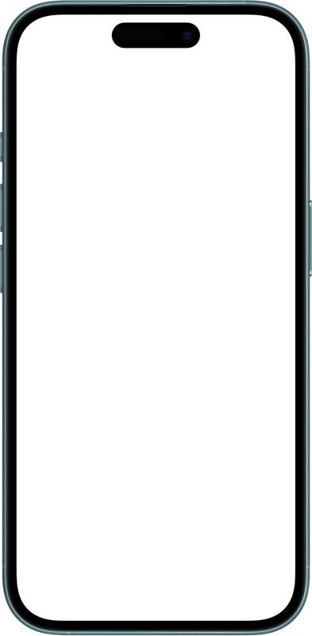

UI DESIGN · E-COMMERCE DESIGN · VISUAL DESIGN
DoktorEdge
A collaborative e-commerce website design for DoktorEdge, a local blacksmith business. The project focused on creating a clear, cohesive interface that presents handcrafted products and services through a modern digital experience.

THE PROJECT
Designing a digital experience for a traditional craft.
DoktorEdge was a collaborative university project focused on designing an e-commerce website for a local blacksmith business. Our team developed the site's visual direction, page structure, and interface to present the business and its products in a clear, approachable way.
My work focused on the interface and its visual presentation. I contributed UI design, wireframes, page layouts, layout diagrams, and design documentation as part of a four-person team.
THE CHALLENGE
Bringing craftsmanship into a modern digital space.
The challenge was to translate a hands-on craft into an online shopping experience. The website needed to reflect the character of the blacksmith business while making its products, services, and information easy to explore.
Our team aimed for a visual style that felt distinctive without getting in the way of browsing. Clear page structure, consistent styling, and straightforward navigation helped bring the different parts of the site together.
The resulting direction brought together a restrained color palette, consistent typography, and repeatable layout choices to create a cohesive website.
MY ROLE
My contributions to the interface.
As one of four team members, I focused on the website's UI, page structure, and supporting design documentation.
UI Design
Contributed to the website's visual direction, hierarchy, spacing, and page presentation.
Wireframing
Created wireframes to plan page structure, content placement, and key interface elements.
Website Layout
Planned content placement and page layouts to support clear browsing across the website.
Layout Diagrams
Produced layout diagrams that communicated page structure and important design decisions.
Team Collaboration
Worked with three teammates to bring individual design contributions into one consistent concept.
Design Documentation
Helped document the website's structure and visual direction in the team's 46-page design document.
DESIGN DIRECTION
Building a visual language around the forge.
The visual direction connected the business's handcrafted character with a clean, approachable e-commerce interface.
Color, typography, imagery, and layout were brought together to give the website a consistent identity while keeping the interface easy to scan and navigate.
COLOR PALETTE
A practical color system built around the brand.
The color system uses black, white, brown, grey, and dark green as the primary visual foundation for backgrounds, text, and interface elements. Additional colors provide functional feedback for states such as order status and errors.
#FFFFFF
#000000
#1B4332
#6F4E37
#D3D3D3
#FFD966
#CC5500
#00A000
#FF0000

The system color palette and the relationship between primary, secondary, accent, order-status, and error colors.
TYPOGRAPHY & LAYOUT
Establishing consistency through type, spacing, and scale.
The design system uses consistent spacing, sizing, and typography rules to create a predictable interface. These shared guidelines help keep layouts aligned and establish a clear hierarchy between headings, body text, and supporting information.
8px Grid
An 8px grid system was used to maintain consistent spacing and alignment.
16px Minimum
The project documentation specified a 16px minimum size for interactive touch targets.
24px
A 24px margin value was used as part of the spacing system.
24px
A 24px padding value helped create consistent internal spacing.
16px
Body content uses a default font size of 16px.
31px
Large headings use a 31px type size to establish visual hierarchy.
Arial Regular — 16px
Arial — 14px for captions
WIREFRAMES & LAYOUT
Defining the structure before the final interface.
I created wireframes and layout diagrams to map out page structure and content placement before the final visual treatment was applied.
These early layouts helped establish hierarchy, navigation, and content placement, while giving the team a shared reference as the design developed.

An early wireframe exploring website structure.

Additional page structure and layout exploration.
DESIGN DOCUMENTATION
Documenting the experience from concept to interface.
The team produced a 46-page design document covering the website's structure, functionality, visual direction, and key design decisions.
The document brought the team's layouts, interface decisions, and visual guidelines into one reference for the implementation stage. My contributions included wireframes, page layouts, and layout diagrams that helped communicate the intended interface.


THE FINAL WEBSITE
Bringing the design direction into a working experience.
Once the design documentation was complete, the team used it as the basis for a working website demo.
The demo was built in Lovable using the team's completed design documentation. This implementation demonstrates the planned layouts, visual direction, and interface structure in a working website.
My role in this project focused on design and documentation rather than building the Lovable demo. The following walkthrough explores some of the key areas of the resulting website.
VIEW WEBSITE →WEBSITE WALKTHROUGH
Exploring the storefront.
The website brings together several product categories under one storefront, giving visitors a central place to explore the business and its offerings.
The main shopping experience is organized around product discovery, with navigation and category groupings helping visitors move between different types of handcrafted goods.

The storefront homepage introduces the business and provides an entry point into the shopping experience.
Browsing product categories.
The storefront organizes its products into distinct categories, including knives, wood and burl, and coffee. This structure gives visitors a straightforward way to browse different areas of the business without overwhelming the main navigation.

Product categories organize the storefront's different offerings into clear shopping sections.
Viewing individual products.
Individual product pages give visitors a closer look at an item before adding it to their cart. This part of the experience provides a more focused view of product information and purchasing options.

An individual product page showing the details presented during the shopping process.
CUSTOM KNIFE BUILDER
A more personalized shopping experience.
One of the more distinctive features of the website is its custom knife builder, which allows visitors to configure a knife through a series of selections.
Rather than presenting a single fixed product, the builder guides visitors through several stages of customization. These include choosing a material, knife type, size, and pattern.
As selections are made, the interface updates the build summary and price. This gives visitors a running view of their configuration before adding the finished selection to their cart.
Step 01 — Choose a material.
The first step allows visitors to choose the material for their custom knife. Different material options can affect the final price of the build.

The material selection step presents the available steel options and associated pricing.
Step 02 — Select the knife type, size, and pattern.
The following stages let visitors refine the configuration by choosing the type of knife, its size, and a pattern. Breaking the process into individual steps keeps the customization experience organized and easy to follow.

The remaining configuration steps allow visitors to personalize the knife.
Reviewing the finished configuration.
Once the selections are complete, the builder brings the configuration together in a build summary. The updated total gives visitors a clear indication of the price before proceeding to the cart.

The final summary brings the selected options and updated price together before adding the custom knife to the cart.
SHOPPING EXPERIENCE
Bringing product selections together.
The shopping experience brings selected products and custom configurations together before visitors proceed with their order.
The cart provides a final point to review selections and gives the shopping experience a clear transition from browsing and customization toward purchasing.

The shopping cart brings selected products together for review.
MOBILE EXPERIENCE
Designing beyond the desktop screen.
The mobile layout carries the website's visual direction into a narrower screen, adapting the content for scrolling and smaller viewports.
A scrolling screen recording provides a more dynamic presentation than a static screenshot, showing how the mobile layout appears as visitors move through the website's content.
RESPONSIVE DESIGN
The interface in motion.
The video shows the DoktorEdge mobile website as the page is scrolled.

REFLECTION
What I took away from the project.
DoktorEdge gave me experience contributing UI design work to a collaborative project for an actual business. Creating wireframes, page layouts, and a detailed design document strengthened my ability to organize information and communicate interface decisions. The project also showed me how important clear documentation is when a design moves from concept into implementation.